SourceID人脸环境部署
前言
概述
本文主要书写SourceID产品人脸部分及相关依赖在进行安装部署时，如何进行安装部署，将相关的步骤进行描述说明。
SourceID产品具体安装详见：svn://192.168.54.191/ykt/RG_LinkID项目管理/SID业务学习文档/部署实施/高教方案/BS-00-SourceId1.6.4版本安装部署手册.docx。
修订记录
| 日期 | 版本 | 修订说明 | 作者 |
|---|---|---|---|
| 2020年04月26日 | V1.0 | 第一次发布 | 陆勇思 |
注：集群部署模式中所有操作均在Master主节点服务器上执行，单机部署就直接在服务器上执行，服务器登录账号只能用root账号操作，集群模式下master主节点与node节点服务器的密码要保持一致。
一、 资源准备
1、 硬件资源：
| 服务器节点 | 服务器系统版本 | 网络 | CPU核数 | 内存容量 | 硬盘磁盘容量 | 说明 |
|---|---|---|---|---|---|---|
| 服务器A | CentOS 7.6.1810 | 与C互通 | 16核 | 32G | 系统盘50G，数据盘500G | 必须安装有英伟达显卡，用于安装人脸厂商服务器 |
| 服务器B | CentOS 7.6.1810 | 与C互通 | 16核 | 32G | 系统盘50G，数据盘500G | 作为FastDFS服务器 |
| 服务器C | CentOS 7.6.1810 | 与B互通 | 16核 | 32G | 系统盘50G，数据盘500G | 一到多台，部署SourceID以及人脸组件，根据时间需要 |
2、 软件资源：
Centos7系统、英伟达显卡驱动、云从服务端软件、KAD部署包、FaceId-Task镜像。
SecureCRT或Xshell、winscp等远程工具。
3、 外部资源：
云从license。
二、 总体顺序
1、 云从服务器安装系统以及显卡驱动，收集机器码。
2、 云从官网申请license。
3、 服务器安装license，启动云从服务端。
4、 作为FastDFS的服务器安装操作系统，通过KAD部署FastDFS组件。
5、 用于部署SourceID的服务器安装好操作系统后，通过KAD部署SourceID服务。
6、 部署FaceId-Task组件。
三、 部署CloudCore_FaceEngine服务（云从）
1、 准备服务器
服务器需要安装有英伟达显卡，适用系统： centos7.2、centos7.3。
2、 安装显卡驱动
2.1、按照步骤
2.1.1、 检查BIOS中的Secure Boot设置，将该值设置成disable
2.1.2、 查看显卡型号
lspci | grep -i vga
lspci -v -s 83:00.0
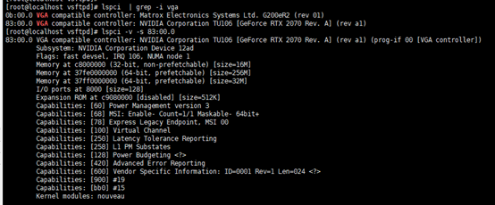
2.1.3、 官网上搜索并下载对应驱动https://www.geforce.cn/drivers
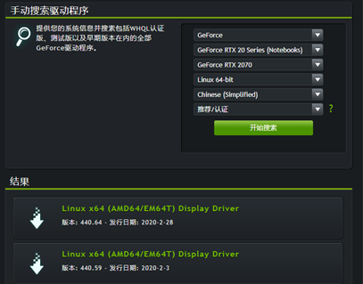
2.1.4、 将下载的驱动上传到服务器
## 通过winscp等工具或者lrzsz命令
mkdir /opt/cloudCore
cd /opt/cloudCore
yum install lrzsz
rz
## 然后选择文件
2.1.5、 安装gcc
yum -y install gcc
2.1.6、 安装kernel-devel
##查看当前内核版本号
uname -r
## 访问http://rpm.pbone.net/index.php3，查找内核版本对应的kernel-devel包
wget ftp://ftp.pbone.net/mirror/dl.central.org/dl/linuxdev/centos7/x86_64/kernel-devel-3.10.0-957.el7.x86_64.rpm
## 需要先安装perl工具
yum install perl
rpm -ivh kernel-devel-2.6.32-431.el6.x86_64.rpm
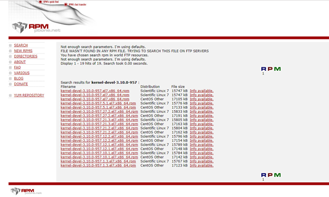
2.1.7、 安装dkms
yum -y install dkms
## 如果这一步提示没有对应的包，可以通过以下方法安装：
yum install perl*
perl -v
yum install epel-release
yum --enablerepo=epel install dkms
2.1.8、 关闭图形界面并重启
sudo service lightdm stop
## 重启：
reboot
2.1.9、 安装驱动
## 进入到驱动存放的路径
./NVIDIA-Linux-x86_64-440.64.run --kernel-source-path=/usr/src/kernels/3.10.0-1062.18.1.el7.x86_64 -k $(uname -r) -dkms
## /usr/src/kernels/3.10.0-1062.18.1.el7.x86_64为kernel安装后的地址，根据自己的版本确定
## 选项基本选择默认，其中覆盖安装选择覆盖
2.1.10、 重启图形界面（可选）
sudo service lightdm start
## 重启
reboot
2.1.11、检查是否安装完成，执行命令后出现以下内容说明安装完成
nvidia-smi
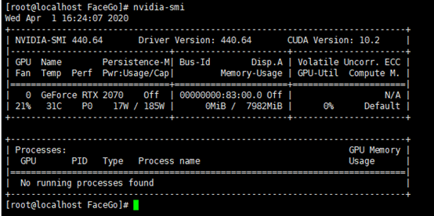
2.2 常见问题：
2.2.1、 Unable to load the 'nvidia-drm' kernel module
未安装dkms，执行上方步骤6
检查BIOS中的Secure Boot设置，该值需要设置成disable
2.2.2、 kernel版本和内核版本不一致导致
Failed to run `/usr/sbin/dkms build -m nvidia -v 440.64 -k 3.10.0-957.el7.x86_64`: Error! Echo Your kernel headers for kernel 3.10.0-957.el7.x86_64 cannot be found at /lib/modules/3.10.0-957.el7.x86_64/build or /lib/modules/3.10.0-957.el7.x86_64/source. You can use the --kernelsourcedir option to tell DKMS where it's located.
解决方案：
yum install “kernel-devel-uname-r == $(uname -r)”
## 安装kernel时使用上方的命令，当yum源中没有对应版本的时候，会导致安装的版本不匹配，此时可以先卸载，再参照上方步骤5重新安装，卸载命令：
yum remove kernel-devel-版本号
3、 收集机器码，申请license
3.1、 收集机器码
cd /opt/cloudCore
## 选择文件
rz
## 解压Linux激活工具
tar xzvf User_UkeyLinux_v1.8.tar.gz
## 进入目录
cd UkeyLinux
## 执行./activator，输入2，收集机器码。
./activator
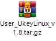 文件下载
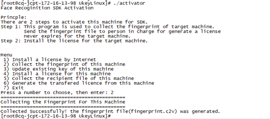
3.2、生成v2c文件
登陆授权官网：https://ai.cloudwalk.cn
fingerprint.c2v文件样例：
将fingerprint.c2v文件内的全部内容复制，粘贴至“请输入设备ID号”处，然后点击“确认”，平台会生成v2c.txt文件。
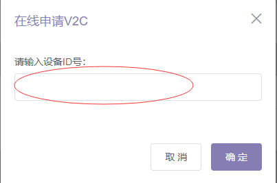
3.3、 激活授权
cd /opt/cloudCore/UkeyLinux
rz ##选择文件
./activator
下载v2c文件，得到v2c.txt文件，上传至云从服务器。
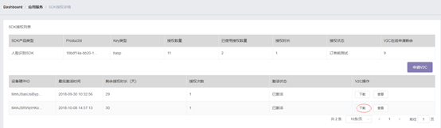
云从服务器主机，执行./activator，输入4，输入v2c.txt，即可完成授权激活。
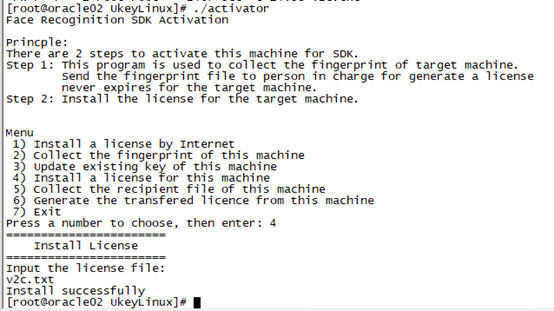
3.4、检查授权状态
执行./UkeyCheck，检查授权状态，核对申请的授权是否正确。
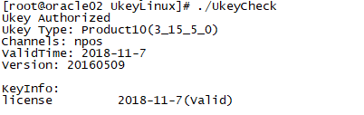
4、 启动云从服务端
（1）关闭防火墙
##服务运行需要将防火墙关闭，如果需要永久关闭可执行如下两条命令，执行信息。
systemctl stop firewalld ##临时关闭防火 安装程序默认
systemctl disable firewalld ##永久关闭防火墙
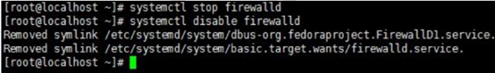
（2）安装包准备
将 CloudCore_FaceEngine 安装程序拷贝至/home/（用户）目录，目录可任意指定。
登录服务器并cd进入目录。
首先解压 CloudCore_FaceEngine.tar.gz 引擎安装包。
执行命令：tar xzvf FaceGo.tar.gz。
解压后修改文件权限：chmod 777 *。
（3）该目录下的文件需要修改：
/{filepath}/FaceGo/AlgorithmRecog/config/extra_conf_gpu.txt
GpuID：GPU个数-1，一个GPU配0，两个GPU配1。
nDetectThread=3： #人脸检测线程数，GPU个数*3。
nFeatureThread=1： #特征提取线程数，GPU个数*1。
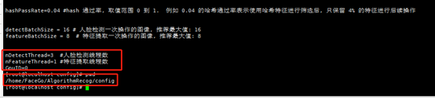
Tip：只需要修改extra_conf_gpu.txt一个文件。
（4）启动
在主程序目录下执行./start.sh，出现如下标识说明启动成功。
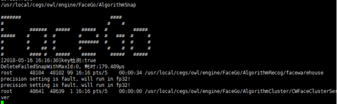
（5）登录页面
地址：ip:7100/page；用户名/密码：admin/admin。登录成功后配置需要使用的人脸库，此人脸库名称会在后面人脸组件上对应配置。
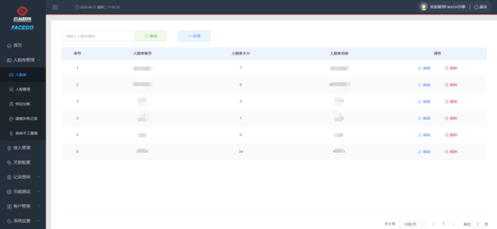
四、 KAD部署FastDFS
1、 KAD工具安装
（1）在线安装
yum install -y http://172.17.8.20:8081/repository/files/ruijie/kad/release/kad-1.6.0-1.x86_64.rpm
## 具体版本根据实际情况确定
（2）离线安装
##将KAD安装包复制到/opt目录下
cd /opt
tar xzvf sourceid-kad-r1.6.4.tar.gz -C /opt/kad
2、 修改配置文件
/opt/kad/workspace/k8s/conf/all.yml中的FastDFS配置参数。
新增：FDFS_USE_TRUNK_FILE: "false"，防止出现图片获取不到的情况。
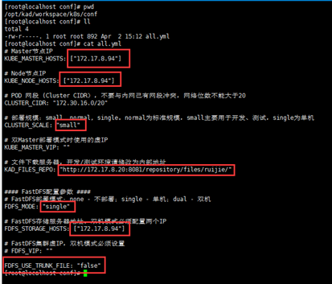
3、 执行部署
kad-play playbooks/fdfs/setup.yml
4、 查看部署状态
ps -aux |grep fdfs_storaged
ps -aux |grep fdfs_trackerd
## 查看fdfs_storaged，fdfs_trackerd两个服务状态
systemctl status fdfs_storaged
systemctl status fdfs_trackerd
5、 卸载（可选）
如果需要卸载，执行以下命令。
kad-play playbooks/fdfs/clean.yml
如果kad工具无法卸载，可以使用网上的方式进行卸载。
链接地址：https://blog.csdn.net/weixin_37380784/article/details/94732272
五、 KAD部署SourceID
1、 KAD工具安装
yum install -y http://172.17.8.20:8081/repository/files/ruijie/kad/release/kad-1.6.0-1.x86_64.rpm
#### 具体版本根据实际情况确定
2、 修改配置文件
（1）在/opt/kad/workspace/ruijie-sourceid/conf/all.yml文件添加人脸组件：
SOURCEID_FACEID_ENABLED: "yes"
配置域名
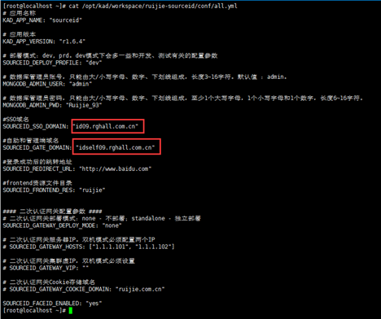
（2）kad.yml添加人脸组件及版本号：
版本号根据实际情况修改
/opt/kad/down/sourceid-kad-r1.6.4/kad.yml
faceid: {name: "sourceid/faceid", version: "1.8.0R1"},
faceid-display: {name: "sourceid/faceid-display", version: "sid0.1"},

3、 修改配置文件
人脸组件版本可能需要安装最新版，而kad工具打包时只打包了当时的配置文件和数据库脚本，因此需要手工修改配置文件。
/opt/kad/workspace/ruijie-sourceid/conf/sourceid/faceid/application-pro.yml
修改该文件的ycface配置，包括云从地址以及云从上配置的人脸库groupIds
4、 部署SourceID
kad-play playbooks/sourceid/prepare.yml
kad-play playbooks/sourceid/setup.yml
5、 检测状态
kubectl -n ruijie-sourceid get pod
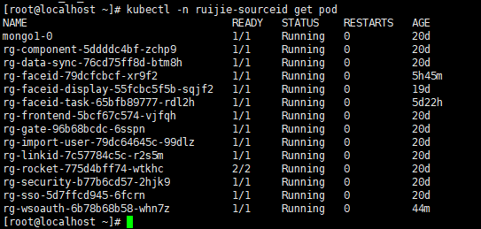
六、 手工部署faceId-task和wsoauth
1、 准备yml文件
注意根据服务器情况合理分配cpu内存等，faceid-task项目只能单pod部署
wsoauth.yml 下载文件
apiVersion: extensions/v1beta1
kind: Deployment
metadata:
name: rg-wsoauth
namespace: ruijie-sourceid
spec:
replicas: 1
template:
metadata:
labels:
service: rg-wsoauth
spec:
containers:
- name: rg-wsoauth
image: id.ruijie.com.cn:25082/sourceid/wsoauth:1.8.0p10
imagePullPolicy: IfNotPresent
env:
- name: JAVA_OPT_EXT
value: "-Xms1024m -Xmx1024m"
resources:
limits:
cpu: 1
memory: 1Gi
requests:
cpu: 1
memory: 1Gi
ports:
- containerPort: 8580
volumeMounts:
- mountPath: /ruijie/sourceid/wsoauth/conf
name: conf
imagePullSecrets:
- name: regsecret
volumes:
- name: conf
hostPath:
path: /home/ruijie/ruijie-sourceid/sourceid/wsoauth/conf
---
apiVersion: v1
kind: Service
metadata:
name: rg-wsoauth
namespace: ruijie-sourceid
spec:
selector:
service: rg-wsoauth
ports:
- port: 80
targetPort: 8580
---
apiVersion: extensions/v1beta1
kind: Ingress
metadata:
name: rg-wsoath-ingress
namespace: ruijie-sourceid
spec:
rules:
- host: self.wzu.edu.cn
http:
paths:
- path: /wsoauth
backend:
serviceName: rg-wsoauth
servicePort: 80
faceid-task.yml 下载文件
apiVersion: extensions/v1beta1
kind: Deployment
metadata:
name: rg-faceid-task
namespace: ruijie-sourceid
spec:
replicas: 1
template:
metadata:
labels:
service: rg-faceid-task
spec:
containers:
- name: rg-faceid-task
image: id.ruijie.com.cn:25082/sourceid/faceid-task:1.8.0
imagePullPolicy: IfNotPresent
env:
- name: JAVA_OPT_EXT
value: "-Xms512m -Xmx2048m"
resources:
limits:
cpu: 2
memory: 3Gi
requests:
cpu: 1
memory: 2Gi
ports:
- containerPort: 8903
volumeMounts:
- mountPath: /ruijie/sourceid/faceid-task/conf
name: conf
imagePullSecrets:
- name: regsecret
volumes:
- name: conf
hostPath:
path: /home/ruijie/ruijie-sourceid/sourceid/faceid-task/conf
---
apiVersion: v1
kind: Service
metadata:
name: rg-faceid-task
namespace: ruijie-sourceid
spec:
selector:
service: rg-faceid-task
ports:
- port: 80
targetPort: 8903
2、 新增配置文件
目前配置文件放在/home/ruijie/ruijie-sourceid/sourceid 路径下，如果没有配置文件，镜像启动时会异常。
Tip：如果k8s集群有多台，则每台机器上都需要配置，配置文件需要手工修改数据库链接等配置。
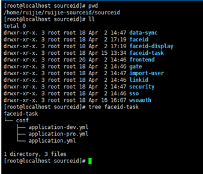
3、 修改配置
rg.sync.image：任务运行间隔时间
identity.user-id：从linkid获取的用户id的key
identity.client-id：支持人脸同步的client
identity.get-users：获取用户id的接口
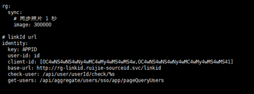
4、 部署应用
## 通过yml文件创建pod
kubectl create -f /opt/kad/workspace/ruijie-sourceid/yaml/faceid-task/faceid-task.yml
kubectl create -f /opt/kad/workspace/ruijie-sourceid/yaml/wsoauth/wsoauth.yml
5、 检测状态
kubectl -n ruijie-sourceid get pod